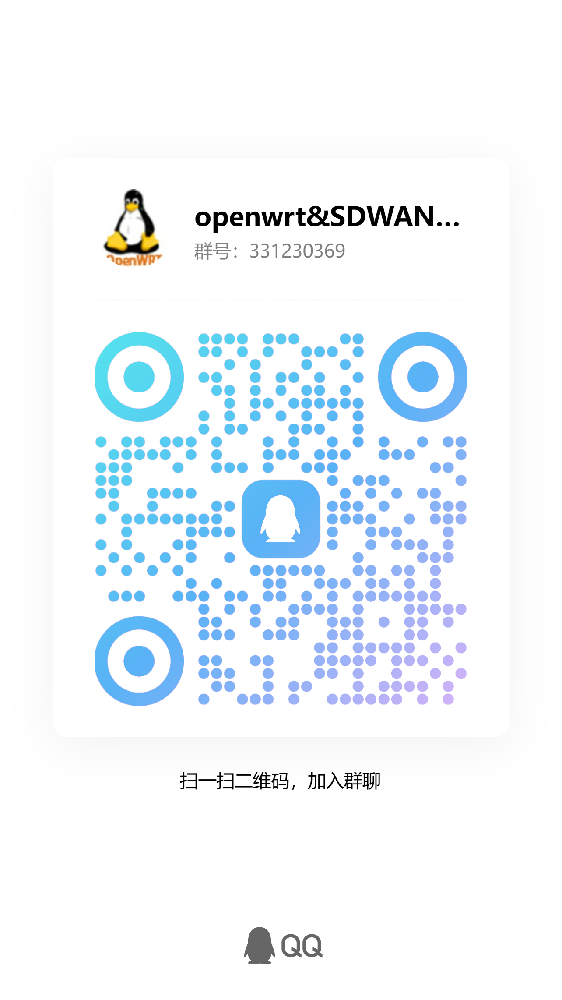

下一代 WiFi Portal 网关 · eBPF 加速与 DPI 流控
ApFree WiFiDog 是一款专为 OpenWrt 平台设计的高性能、开源 HTTP/HTTPS 强制门户解决方案。
它为 Wi-Fi 网络提供安全认证、高并发处理和灵活的规则管理。
基于 API 的 iptables 集成，线程安全。使用 libevent2 + epoll 构建，性能卓越。
完全支持 HTTPS 重定向和长连接（WebSocket, MQTT）。
支持本地 + 云端认证、闪屏页模式。无需重启即可管理 MAC、IP、域名。
通过 eBPF 实现流量控制和 DPI。
在 较新版本 OpenWrt 上:
apk update apk add apfree-wifidog
在 旧版本 OpenWrt 上:
opkg update opkg install apfree-wifidog
ApFree WiFiDog 通过 luci-app-apfree-wifidog 提供 LuCI Web 界面。
推荐使用 chawrt，它捆绑了 ApFree WiFiDog + LuCI，提供即用型的 OpenWrt 固件。
需要外部认证服务器。通过 LuCI 配置：认证服务器（主机名、端口、路径）+ 网关接口。
无需外部认证服务器。通过 LuCI 配置：网关接口 + 重定向 URL（欢迎页/服务条款页）。
通过以下命令检查日志：logread
在 wifidogx.conf 中提高调试级别 → DaemonLogLevel 7。
常用命令:
wdctlx status client # 显示已认证的客户端 wdctlx show domain # 显示受信任的域名 wdctlx apfree user_list # 列出在线用户
我们欢迎各种贡献！请在 GitHub 上提交问题和拉取请求。
💬 欢迎加入 ApFree Wifidog 官方 QQ 交流群
扫描二维码或搜索群号 331230369 加入我们